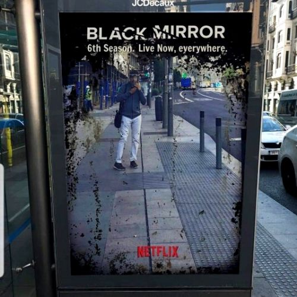
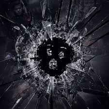
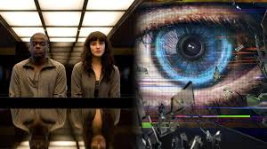

Un 4 de diciembre de 2011, el canal de televisión público británico Channel 4 puso al aire "The National Anthem" el primer episodio de una serie antológica llamada "Black Mirror". A partir del año 2016 la serie paso a ser propiedad de Netflix, y su éxito se volvió mayor debido a la masividad del gigante del streaming. Nuevos episodios, una película interactiva y varios proyectos han llegado desde ese momento al día
Estreno

¿Temporada 6?
Casi tres años han pasado desde el estreno de la quinta temporada de 'Black Mirror' y todo hacía pensar que la serie de ciencia ficción había quedado definitivamente de lado. Sin embargo, todo hace pensar que Netflix siempre quiso seguir adelante con ella y simplemente ha sido cosa de Brooker que haya pasado tanto tiempo hasta la llegada de una nueva entrega.

¿Como será dicha temporada?
La sexta temporada tendrá una ambición más cinematográfica que sus predecesoras, con cada episodio siendo abordado como si se trata de una película. Tampoco es que suene muy diferente a las anteriores entregas, por lo que habrá que estar atentos para ver cómo se concreta exactamente esto.

¿De qué trataran los capítulos?
Por el momento no hay ningún detalle sobre qué historias contará la temporada 6 de 'Black Mirror', pero sí se sabe que Netflix ya está trabajando en el casting y que se espera que sea más larga que su predecesora. Y es que la quinta temporada apenas tuvo tres episodios...